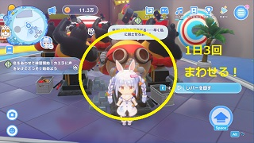

HOLOCRAWL · 고정지형 초안190
캡슐 콩 · 작은 캡슐 오락실
카엘라의 고릴라 캡슐 머신을 중심으로 만든13×11칸 오락실입니다. 뒤쪽에는3×3칸 머신과 캡슐 보관대, 한쪽에는 작은 모루, 앞쪽에는 벤치와 빈 교환 카운터를 배치했습니다. 머신 둘레를 한 칸씩 돌아다닐 수 있습니다.
도트 준비 중…
벽에 붙인 배치 · 뒤쪽 던전 벽과 연결독립 배치 · 사방 최소2칸 통로
검붉은 철제 외벽 · 황동색 테두리 · 고릴라 문양 입구 · 낮은 캡슐 보관대
원작 캡슐 콩 참고 화면
작은 정면 참고 화면의 검정·빨강 고릴라와 둥근 눈 장식을 참고했습니다. 뽑기 기계의 세부 구조와 평면 배치는 이 게임의 도트 크기에 맞춰 재해석했습니다.

원작 사진 출처 · 원작 시설 목록
32px 타일 · 그림을 누르면2배 정수 배율로 확대됩니다. 브라우저 도트·배치 검토본입니다.
확정된 분수 광장189 · 배치 검사